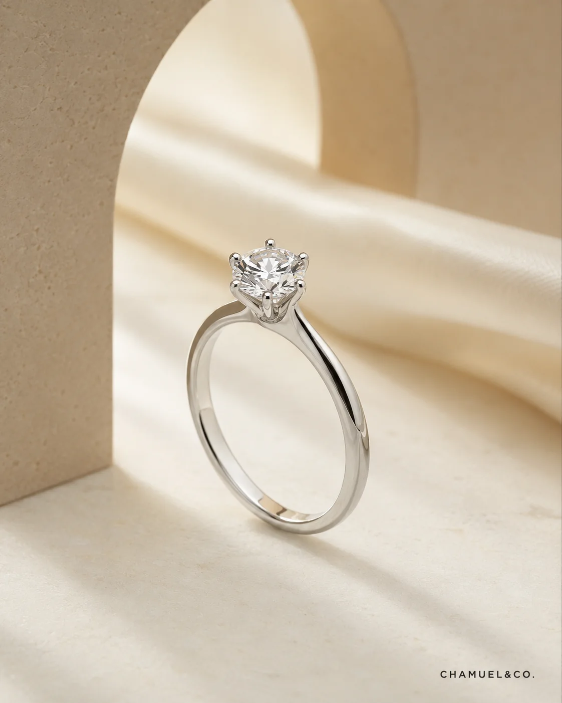
Solitaire
Classic Solitaire
Clean timeless and focused on the centre stone
Explore our collections by occasion, then view real work references, diamond shapes and setting angles inside the same page.
Inspired by the symbolism of Chamuel and the idea of love that protects guides and remains by our side
Each design carries subtle elements of wings halos and embracing curves Rather than presenting these symbols literally they are refined into graceful lines hidden details and carefully engineered structures
From the front every piece feels timeless and elegant From another angle a wing a heart or a protective embrace is revealed creating a private meaning known only to the person wearing it
Made to mark proposals anniversaries personal milestones and the people we never want to forget the Angelic Collection is a reminder that true love is not only something we feel It is something we carry with us
Create an Angelic PieceUse our 3D Ring Builder to choose shape, setting and material with price range before advisor review.
Use these references to compare silhouette height sparkle and daily wear before moving into the Setting Library or 3D Ring Builder

Clean timeless and focused on the centre stone
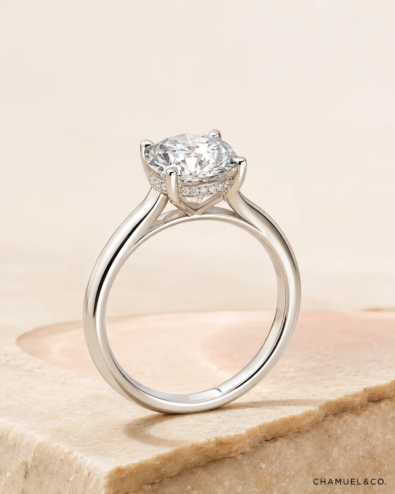
Extra brilliance from the side while the front stays clean
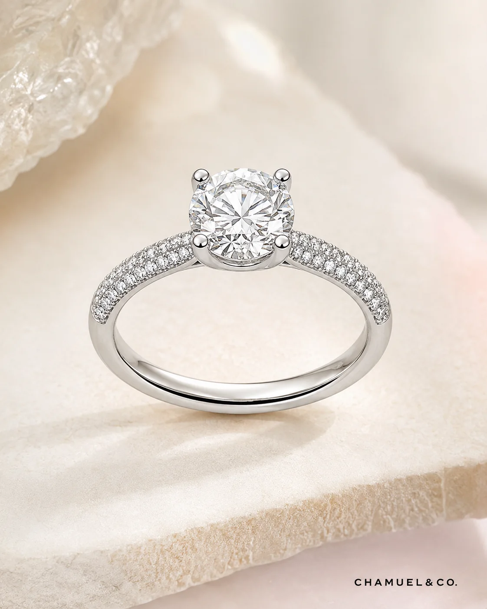
Side diamonds create a brighter overall ring presence
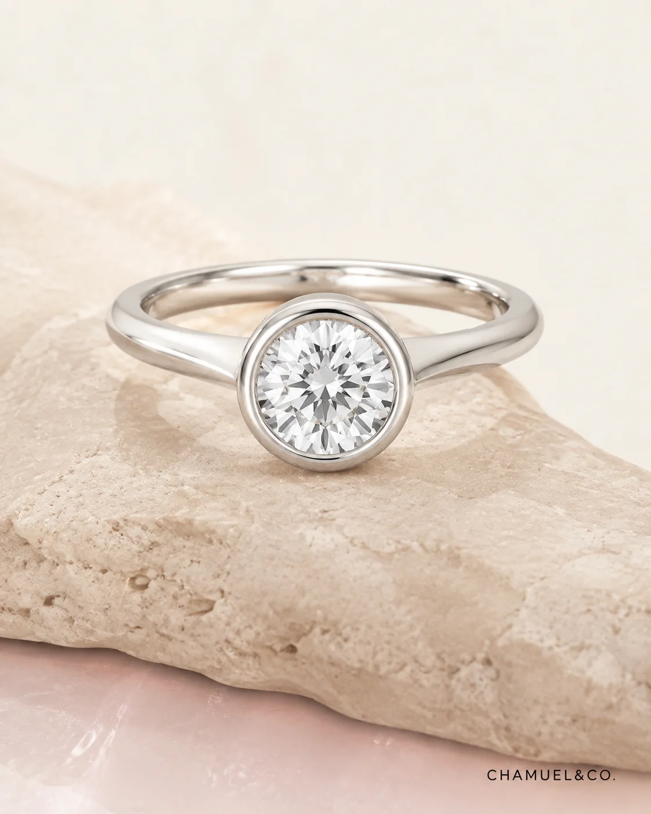
A cleaner enclosed direction for practical daily wear
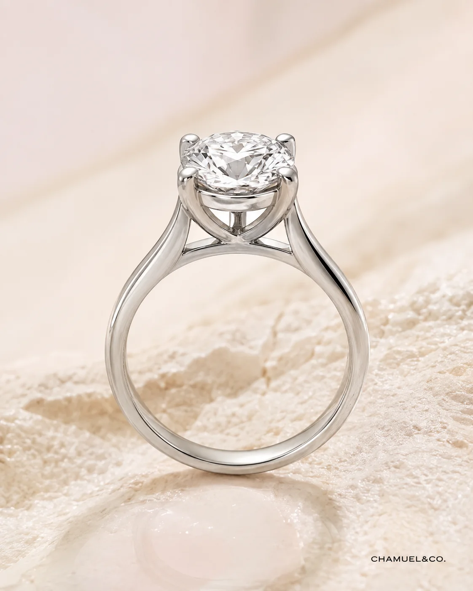
Graceful shoulders lift the centre setting and create structure
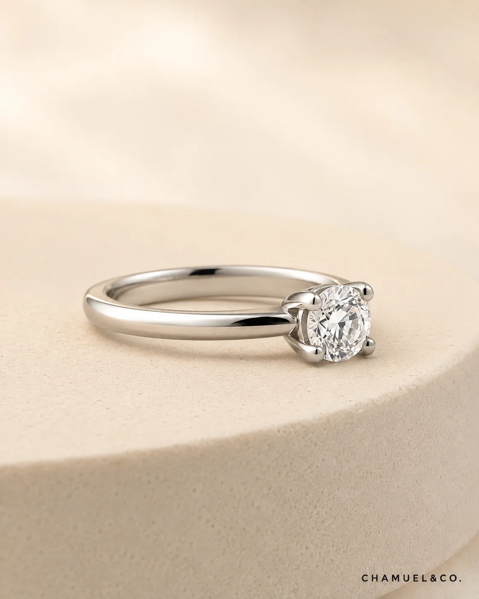
Useful for customers who prefer a lower everyday wearing profile
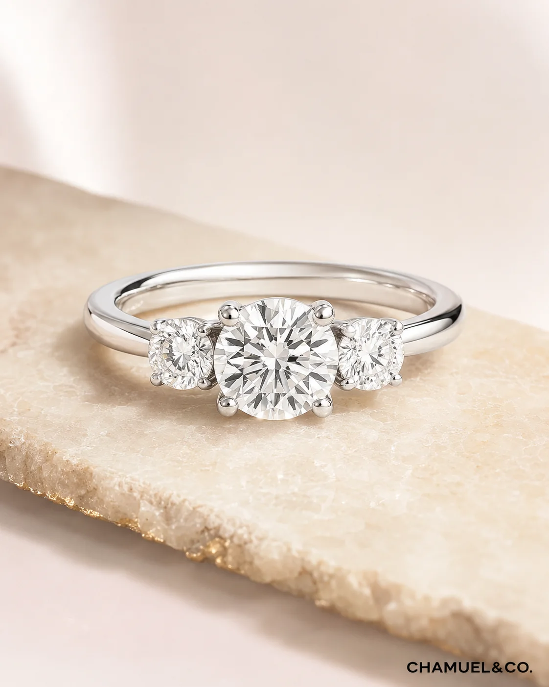
A symbolic direction often chosen for past present and future
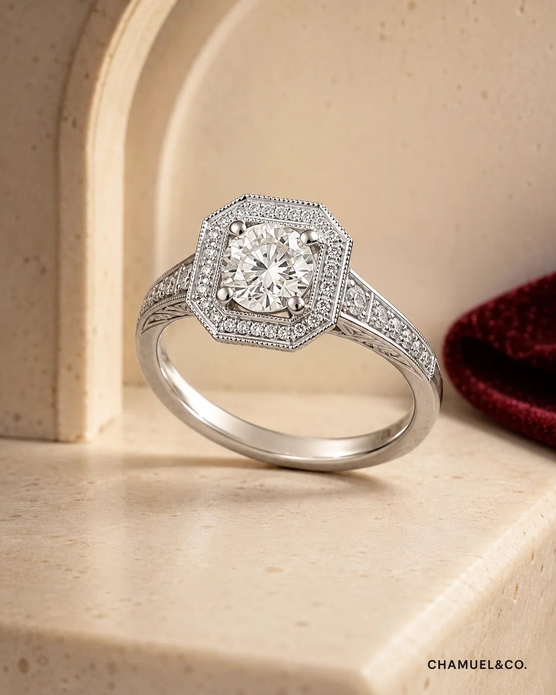
Decorative details for customers who want something more distinctive
Explore proposal ring styles from different angles to compare height, side profile and setting details.


Wedding band customers usually need comfort, durability and matching style. This showcase highlights clean designs that are easy to advise.
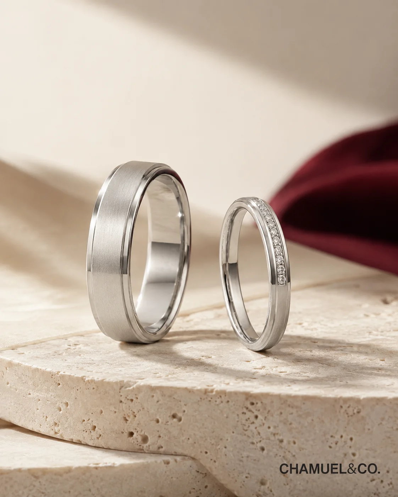
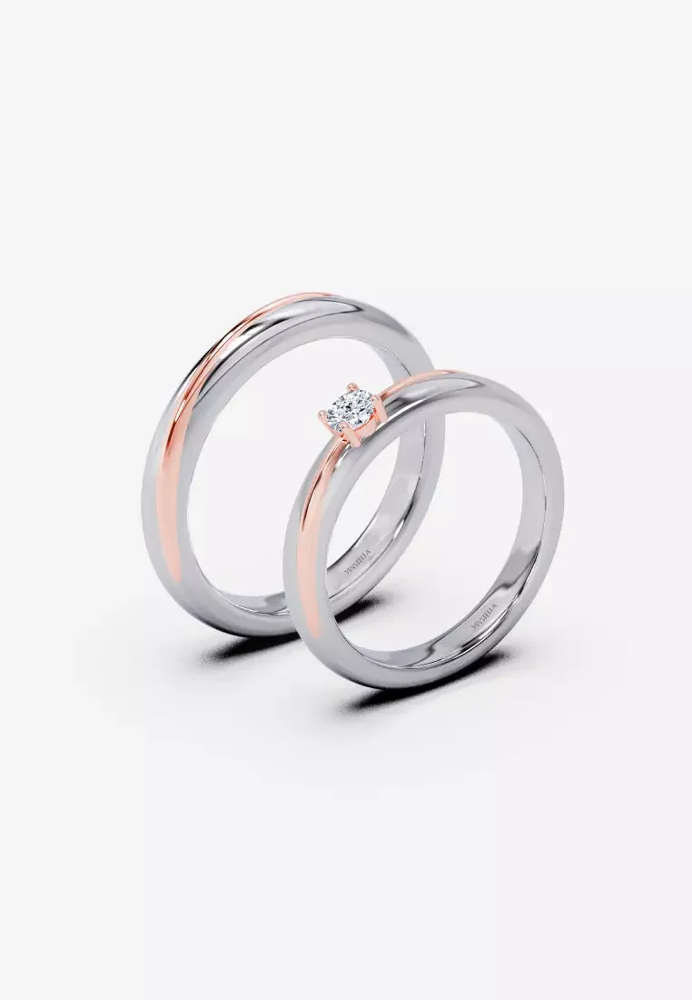

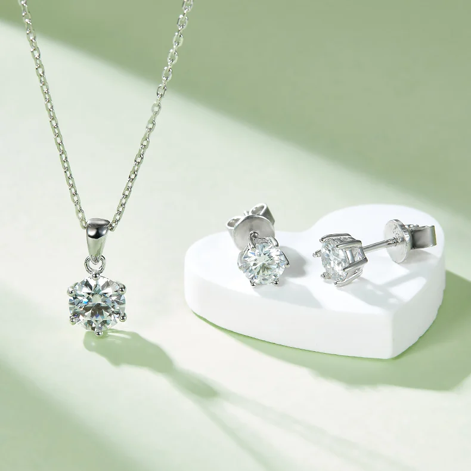
Necklace and earrings sets are grouped by diamond shape so customers can choose visually before discussing material and stone type.

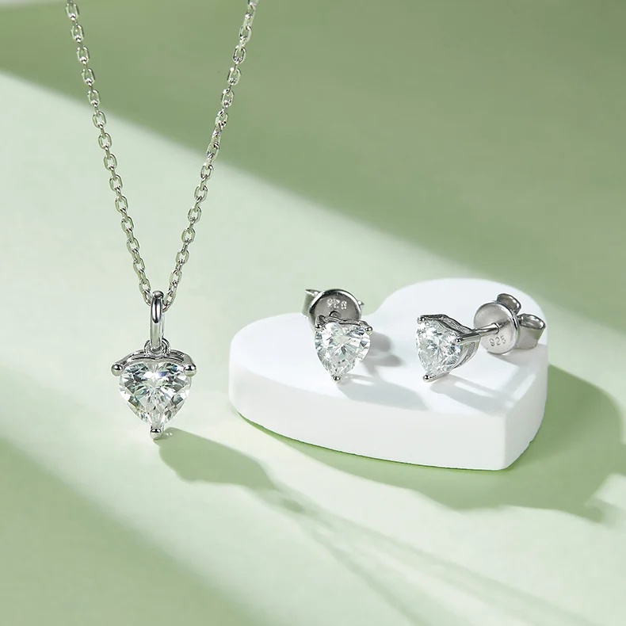
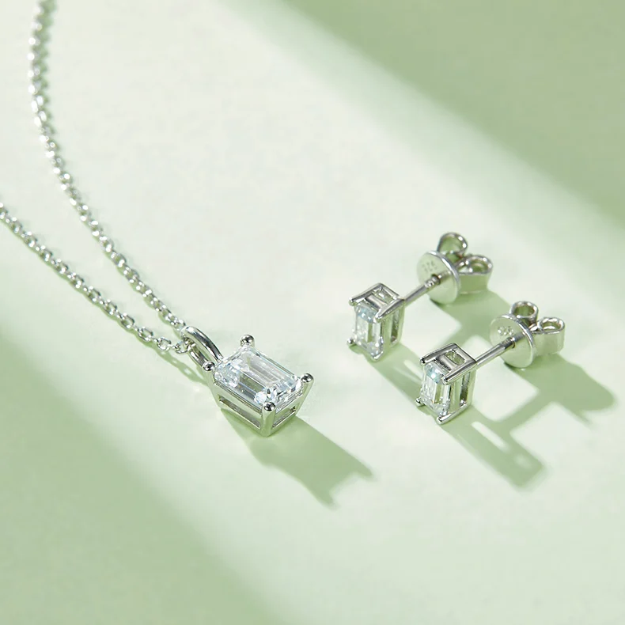
Customers can browse by occasion first, then view real angles, shape references and design directions here before sending us the style they like.

A classic base setting for customers who want something timeless, practical and easy to understand. It supports multiple diamond shapes and works well as the first advisor recommendation.
Round feels classic, oval feels elegant, emerald feels refined, radiant feels bright, and princess feels modern. These references help customers choose the feeling before discussing price.


We will suggest whether to go engagement ring, wedding bands, necklace, earrings or custom jewelry.